Examples#
This gallery walks through every public feature of
chemistrykit.photochem: Jablonski-diagram excited-state kinetics
(reusing chemistrykit.kinetics’s reaction-network engine),
fluorescence/phosphorescence quantum yields and the photochemical
quantum yield via Beer-Lambert, Stern-Volmer quenching with a
static-vs-dynamic diagnostic, photostationary-state kinetics for a
two-state photoswitch, the H2/Cl2 photochemical chain reaction,
fluorescence observables (Stokes shift, Perrin anisotropy), Förster and
Dexter energy transfer, ferrioxalate actinometry, and Rehm-Weller
electron-transfer quenching.
Each script in this gallery is self-contained and can be run directly
with python examples/photochem/<section>/<script>.py. Every script
also carries an RST module docstring as its title/description and uses
# %% markers to split narrative text from code, which is exactly what
Sphinx-Gallery renders into the pages below – the script is the source
of truth for what you see, not a copy of it.
Sections#
jablonski – the 3-state Jablonski excited-state decay network, checked against its closed-form population solution; triplet phosphorescence, flash photolysis of a transient triplet, and Kasha’s rule.
quantum_yield – the Grotthuss-Draper and Stark-Einstein laws of photochemistry, and Vavilov’s excitation-independent fluorescence quantum yield.
chain_reaction – the H2/Cl2 photochemical chain and its super-unity quantum yield.
stern_volmer – Stern-Volmer quenching, fitting a quenching constant, and distinguishing static from dynamic quenching.
photostationary_state – the photostationary state of a two-state photoswitch under simultaneous forward/reverse photolysis, checked against long-time numerical integration.
fluorescence – the Stokes shift and the Perrin anisotropy equation.
energy_transfer – Förster (FRET) and Dexter exchange energy transfer.
actinometry – photon-flux measurement with the ferrioxalate actinometer.
electron_transfer – Rehm-Weller electron-transfer quenching.
Chemical actinometry#
Measuring a light source’s photon flux with the potassium ferrioxalate chemical actinometer.
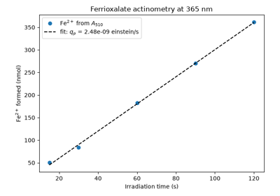
Hatchard and Parker’s ferrioxalate actinometer: counting photons chemically
Photochemical chain reactions#
The H2/Cl2 photochemical chain reaction, whose quantum yield far exceeds the one-photon-one-molecule limit.
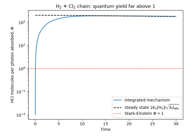
Bodenstein and Nernst: the H2 + Cl2 photochemical chain reaction
Photoinduced electron transfer#
Fluorescence quenching by electron transfer, and the Rehm-Weller relation between quenching rate and electron-transfer free energy.
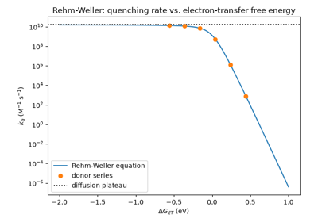
Rehm-Weller equation: electron-transfer quenching vs. driving force
Energy transfer#
Excitation energy transfer between a donor and an acceptor: Förster dipole-dipole transfer and Dexter exchange transfer.
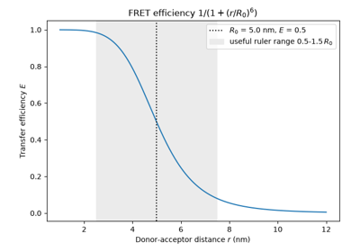
Förster resonance energy transfer: the inverse-sixth-power distance law
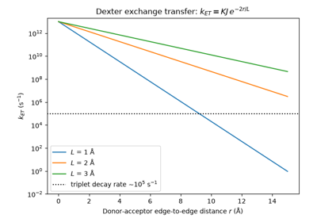
Dexter exchange energy transfer: exponential fall-off with distance
Fluorescence observables#
Steady-state fluorescence measurements: the Stokes shift between absorption and emission, and the Perrin fluorescence-anisotropy equation.
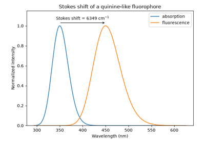
Stokes shift: fluorescence is emitted at longer wavelength than it is absorbed
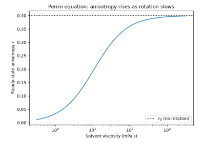
Perrin equation: fluorescence anisotropy and molecular rotation
Jablonski-diagram kinetics#
The 3-state (S1, T1, S0) Jablonski excited-state decay network, checked against its closed-form population solution, plus triplet phosphorescence, flash photolysis of the triplet, and Kasha’s rule.
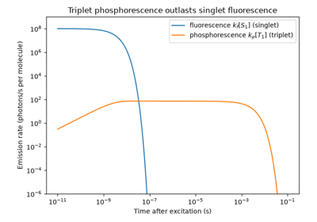
Lewis and Kasha: phosphorescence as slow emission from the triplet state
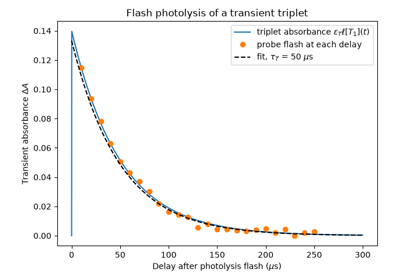
Norrish and Porter’s flash photolysis: watching a transient triplet decay
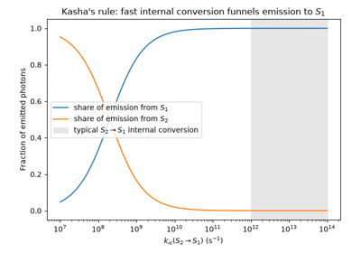
Kasha’s rule: emission comes from the lowest excited state
Photostationary state#
Photostationary-state kinetics of a two-state photoswitch under simultaneous forward/reverse photolysis, checked against long-time numerical integration.
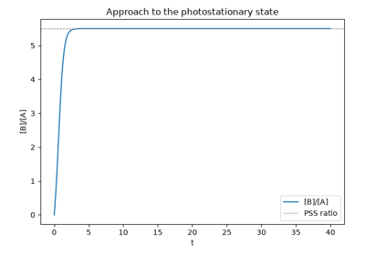
Photostationary-state kinetics of a two-state photoswitch
Quantum yields#
The Grotthuss-Draper and Stark-Einstein laws of photochemistry (absorbed photons and the photochemical quantum yield), and Vavilov’s law for the fluorescence quantum yield.
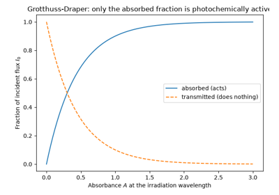
Grotthuss-Draper law: only absorbed light drives photochemistry
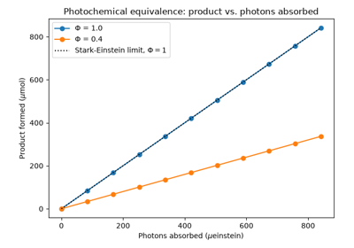
Stark-Einstein law: one absorbed photon, at most one reacting molecule
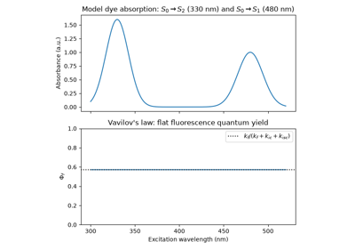
Vavilov’s law: fluorescence quantum yield is independent of excitation wavelength
Stern-Volmer quenching#
Stern-Volmer quenching, fitting a quenching constant, and distinguishing static from dynamic quenching.
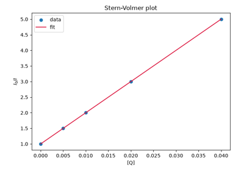
Stern-Volmer quenching, and distinguishing static from dynamic mechanisms